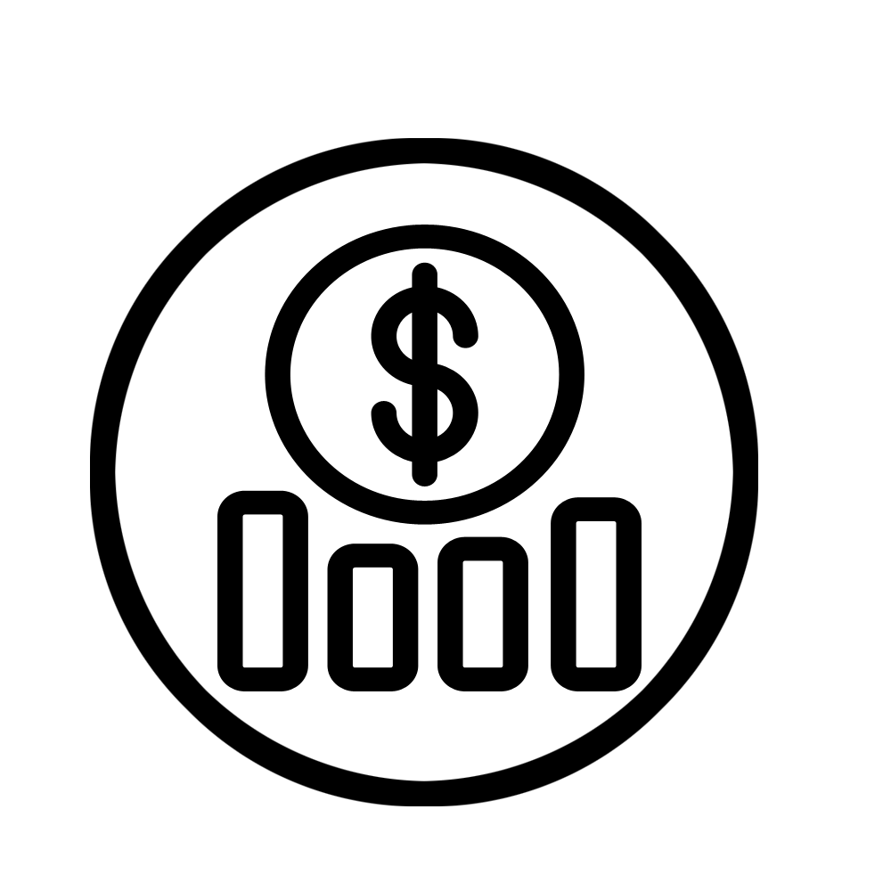

Gestion de budget
Budgeto est un outil de budgétisation sophistiqué fait pour soulager les douleurs de suivi aux planificateurs et professionnels. Budgeto propose une façon très intuitive de gérer toutes les dépenses de votre colloque : du matériel au personnel, rien n’est laissé au hasard.
informations
dance cette rubrique vous aurez une introduction à l'inteface de l'application Budgeto. Pour une utilisation optimale des ressources, il est conseillé de parcourir l'ensemble de l'aide en ligne.
Page d'Accueil

la page d'accueil de Budgeto est intuitive et simple. Faite de sortes à mettre les planificateurs et professionnels à l'aise.
On trouve quatres sections
- Introduction : présentation de l'application de gestion de budget
- Services : présentation des services importants offert pr l'application
- A propos :
- Se connecter :accéder aux fonctionnalités de Budgeto
S'inscrire

pour s'inscrire il suffit de cliquer sur le bouton s'inscrire, un formulaire va apparaitre. Vous devez ajouter des informations vous concernant :
- Votre nom, prénom et nom d'uilisateur
- Votre adresse email
- mot de passe
- numéro de téléphone
Accueil
cette section concerne les utilisteurs inscrits
pour vous connectez il suffit de cliquer sur le bouton s'identifier

Identification
Après avoir cliquer sur le bouton identifier, la page d'identification apparait.
pour vous connectez il suffit de cliquer sur le bouton s'identifier

Entrer votre nom d'utilisateur et mot de passe dans les champs appropriés
Page utilisateur
Dans la page d'accueil utilisteur vous trouverez les informations concernant vos colloques/événemets déja créer
vous pouvez gérer vos colloques/événements rapidement de votre page utilisateur

Gérer vos colloques
- Pour modifier votre colloque cliquer sur le bouton modifier (champ 1)
- Pour supprimer votre colloque cliquer sur le bouton supprimer (champ 2)
- Pour accéder à votre profil, cliquer sur profile (champ 3)

Ajouter colloque/événement
Sur la page utilisateur vous pouvez ajouter un colloque ou un événement
Il suffit de cliquer sur ajouter colloque

Page Colloque
Lorsque vous cliquez sur le bouton modifier, vous aurez la fenêtre suivantes qui va apparaitre

Dans le menu on trouve :
- Menu: pour revenir à la page de l'uilisateur
- Gestion de budget: ajouter les ressources à votre colloque
- Tables : pour visualiser les différents équipements utilisés
un court résumé est présenté en haut.
au centre des statistiques concernant l'évenement ou colloque
Colloque/événement
Lorsque vous ajoutez un nouveau colloque ou événement, vous aurez à remplir les informations le concernant.
vous pouvez remplir les champs ultérieurement, mais il est fortement conseiller de le faire dès le début
Colloque/événement
Lorsque vous ajoutez un nouveau colloque ou événement, vous aurez à remplir les informations le concernant.
vous pouvez remplir les champs ultérieurement, mais il est fortement conseiller de le faire dès le début
Colloque/événement
Lorsque vous ajoutez un nouveau colloque ou événement, vous aurez à remplir les informations le concernant.
vous pouvez remplir les champs ultérieurement, mais il est fortement conseiller de le faire dès le début